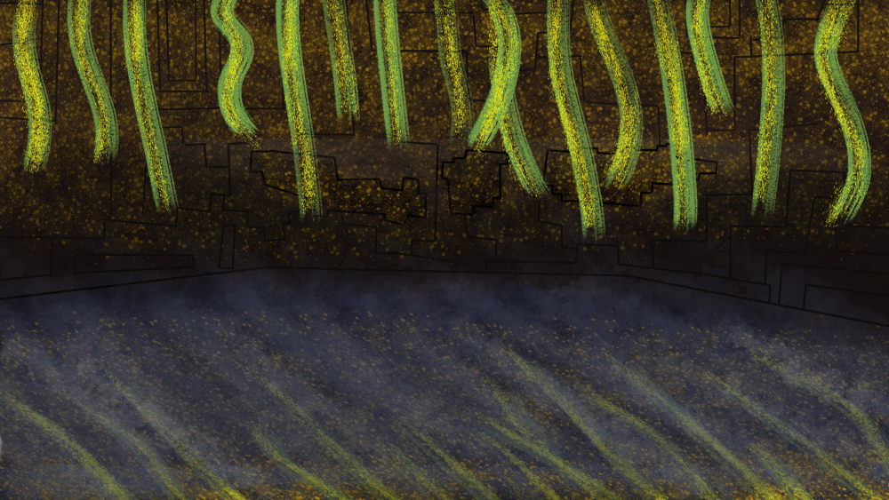
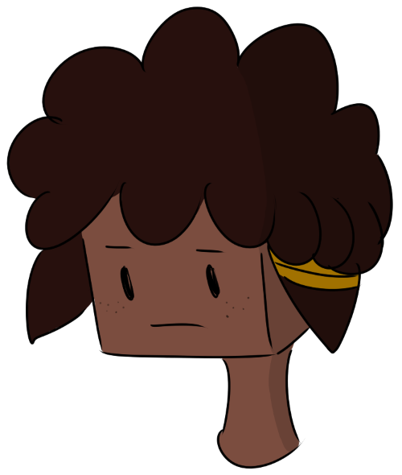

Meet the crew!
Get to know the characters you’ll be teamed up with in your story!

Get to know the characters you’ll be teamed up with in your story!


Axel may be a bit gruff at times, but the size of his heart is matched only by the skill of his cooking. Having had an otherwise peaceful life ripped out from under him by monsters, his fear of failure has required the concentrated efforts of close friends to alleviate. Hard-working and amicable, Axel’s bakery has allowed him and his friends to live comfortably in their treehouse, far away from caves or other dark places. While adventuring may have its perks, he’s perfectly content to let others have the glory, preferring to explore the smaller secrets life has to offer.



Olivia can come across as opinionated and cynical, but deep down, all she wants is to make her friends happy. Her passion for redstone engineering festered during the lengthy period of her librarian role in Town Hall’s basement, leaving her with a hunger to make the world better with her habitual tinkering. While she may never reach the heights of her idol, the legendary Ellegaard of the Order of the Stone, being able to automate the farm for Axel’s bakery has been the biggest step towards her dream so far. Just don’t obligate her to choose between her friends and her dreams, as time spent finding the answer has only left her fearing the day of her decision.


Lukas is a big believer in teamwork, especially when he’s the one calling the shots, which makes his role as leader of the Ocelots most appropriate. He’ll be the first to endorse collaboration at any given opportunity, and the first to be frustrated to see his teammates not getting along. Agreeableness is the lubricant of progress; keeping secrets, holding grudges, leaving things unsaid, it all grinds things to a halt in the end. For this reason, he makes it a point to be forthright, and expects the same of those around him.


Maya has a bone to pick with the world, and she’s not afraid to make it your problem. Her strange past has made her both openly hostile and privately depressed—a facet of her personality only those closest to her have seen. Despite her insecurities, Maya is an expert alchemist and a wizard at building, which have been pivotal skills for putting the Ocelots on the map. Her level of artisanry is as prodigious as it is heartbreaking, for talents like hers can come at a cost few, if any, are willing to pay.


.png "Act Three")
Aiden is what happens when you strap a firecracker to a hedgehog and throw it at the first person you see. Confrontational and stubborn to a fault, Aiden has no qualms about making sure others take his opinions seriously. After a long life of being bullied, what other option could there be? When all bets are off, his pragmatic approach may go against what others believe to be right, but the hard truths he has had to learn have shaped it into his most reliable protocol. His audacity can make him either the most troubling liability, or the most vital member of the team, which sometimes places his role in the Ocelots in a tenuous position.


Petra is one of the most reliable scavs in the business, and one of the most cutthroat. Her piecemeal rates have made her the choice of builders across the world, even if her penchant for attracting trouble has made for reluctant clientele. Her brazen methods include using friends as bait, crippling the competition, operating through shady middlemen, and making a break for it at the first sign of complications. Still, her capabilities make her a valuable asset for those willing to overlook her volatile lifestyle.


It's you! You may not have aspired to much in life, but meeting your friends has given structure to your natural curiosity. Your sentimentality has led you into some tricky situations—like helping your friend with her job, only to be used as bait, or arguing about the merits of keeping your favorite pig as a pet—but your gut always tells you to be a friend to everyone you can, and it hasn’t steered you wrong yet! All the same, despite the fulfillment you’ve gotten by helping Axel with the bakery, you can’t help but feel like you were meant for something more… if only you could figure out what.


It's you! You may not have aspired to much in life, but meeting your friends has given structure to your natural curiosity. Your sentimentality has led you into some tricky situations—like helping your friend with her job, only to be used as bait, or arguing about the merits of keeping your favorite pig as a pet—but your gut always tells you to be a friend to everyone you can, and it hasn’t steered you wrong yet! All the same, despite the fulfillment you’ve gotten by helping Axel with the bakery, you can’t help but feel like you were meant for something more… if only you could figure out what.